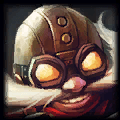
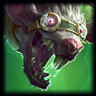
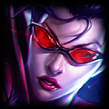
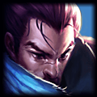

Jotavê - não tinha medo o tal João de Santo Cristo

Jotavê é um programador falido que estuda fazendo sites horríveis como esse para se divertir. A gameplay dele está de acordo com o ciclo lunar, isto é, dependendo da semana, esse galado vai apresentar uma gameplay diferente. Foi deportado do útero da mãe por badernar e promover festas estranhas com gente esquisita lá dentro. Já foram 2 ref de Legião ein?
Jotavê joga fácil com:
   